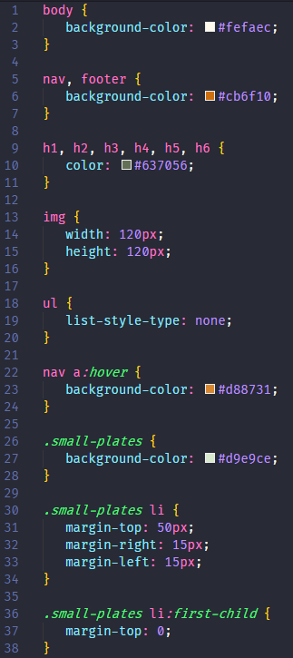

Expand this section to compare your work.
You can also compare your styles.css file with our answer key if the image is too difficult to read.
CSS allows you to be as generic or as specific as you want. In this section we will learn how to apply styles to multiple selectors and work with special selectors.
This section will help guide you through the following steps:
Setting a style on multiple selectors at once makes CSS succinct. In this section you'll set a default color for all header text.
Select a default color for the headers. Create a style for all headers (h1 - h6) and define the color property in styles.css. Since this is a default style, define it near the top of the page, after the style for body like this
styles.css
h1, h2, h3, h4, h5, h6 {
color: #637056;
}
Define a style for more than 1 selector by comma separating the selector list.
Providing user feedback on clickable elements such as hyperlinks is thoughtful user interaction. You'll set a hover color, style lists, and practice CSS organization.
Create a style targeting the hover Pseudo Class on the a tag within nav and define the background-color property. Your code should look similar to this.
styles.css
nav a:hover {
background-color: #d88731;
}
Group styles for the same parent element together to make it easier for yourself. Group all the nav style together, but order by specificity.

We don't want the bullets to show in the navigation menu. Remove the bullets by setting the list-style-type property to "none" on the ul tag in nav. Your code should look like this.
styles.css
nav ul {
list-style-type: none;
}
Save your file and view in Chrome. The navigation bar is starting to look better.
Learn more about styling lists using MDN list styling reference.
footer. Be sure to put these styles towards the bottom of the page with your footer background color.We'll work some more with list styling and add spacing between list elements.
Open index.html and find "Small plates" so that you know how to target styles for this list. Notice this section has class="sidebar". We will target this class for styling.
Remove the bullet points in the ul in class="sidebar".
Remember, styles for class has . prepended. Take a look at your fine work resizing the drink menu images.
We want to add extra space between each list item on the "Small plates" menu by setting the margin-top property to "50px" on the list items. Create a style targeting li within the ul with class="sidebar" like this
styles.css
.sidebar ul li {
margin-top: 50px;
}
You are using the "Descendant combinator". A combinator is a special selector. The descendant combinator contains 2 or more selectors with a space between each selector. The first selector is an ancestor of the second in the HTML. So in this case, you are saying
For all HTML elements with the class .sidebar that has a descendant ul that has a descendant li, add a top margin.
Save your file and view in Chrome. You now have plenty of spacing between each food menu item but the margin-top property also added space between the "Small plates" header and list. Let's take care of that extra space next.
Create another style targeting the li elements in the "Small plates" menu after the one you created in the previous step. Add the Pseudo Class first-child and define the margin-top property using the value "0". We are overriding the previous style selectively for the first child. Your code should look like this
styles.css
.sidebar ul li:first-child {
margin-top: 0;
}
Save your file and refresh the page. The spacing looks better now.
You can also use combinators to declare a property on all li except the first in one fell swoop. Instead of having a style for all list items and overriding the first child, you could have written
.sidebar ul li + li {
margin-top: 50px;
}
The + is the "Adjacent Sibiling" combinator and selects li elements directly after the first one. So in this case, you are saying
For all HTML elements with the class .sidebar with a descendant ul-- apply a top margin to li tags that have a preceding li tag.
Read more about the Adjacent sibling combinator.
Compare your styles.css against the answer key for your work so far. It might look a little different depending on the color palette you chose.
You can also compare your styles.css file with our answer key if the image is too difficult to read.